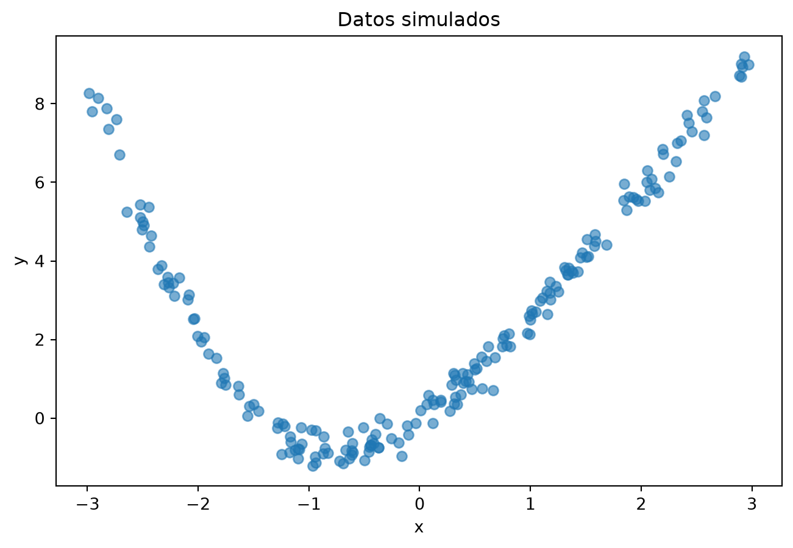
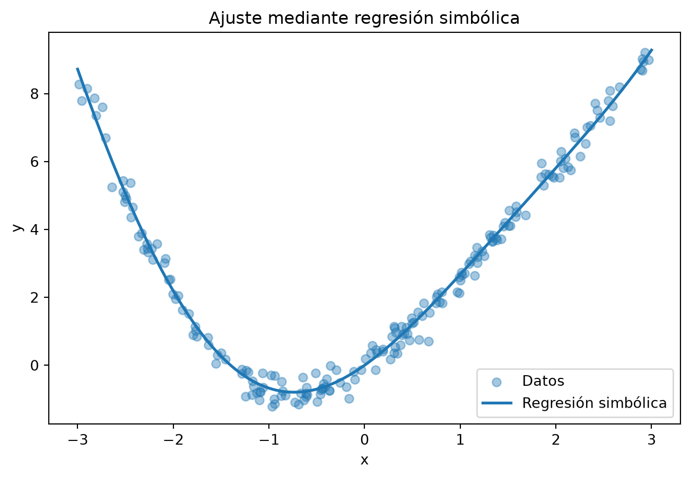
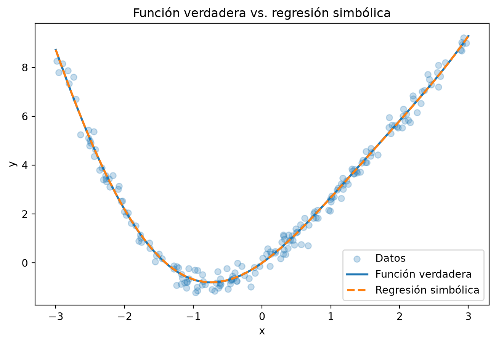

Código
%pip install pysrUtilizaremos regresión simbólica para encontrar una expresión matemática que describa la relación entre una variable predictora \(x\) y una variable respuesta \(y\).
A diferencia de otros métodos de regresión, no especificaremos de antemano una forma funcional como
\[y = \beta_0+\beta_1x+\beta_2x^2.\]
En su lugar, indicaremos qué operaciones matemáticas puede utilizar el algoritmo y dejaremos que busque expresiones que expliquen los datos.
Trabajaremos con datos simulados para conocer la función que generó los datos y poder compararla con la expresión encontrada por el algoritmo.
📝 Diapositivas
Utilizaremos la biblioteca PySR.
En un notebook de Jupyter se recomienda instalarla mediante:
%pip install pysrAunque utilizaremos PySR desde Python, el motor que realiza la búsqueda simbólica utiliza Julia.
Por esta razón, la primera vez que ejecutamos
from pysr import PySRRegressorpueden aparecer mensajes relacionados con la descarga, instalación o configuración de Julia y sus dependencias.
Esto es normal y puede tardar algunos minutos.
Después de instalar PySR puede ser necesario reiniciar el kernel de Jupyter.
Por ejemplo, si aparece un error indicando que pysr no existe después de haberlo instalado:
En Jupyter, %pip install pysr suele ser preferible a !pip install pysr, ya que instala el paquete en el entorno asociado al kernel actual.
Ahora importamos las bibliotecas necesarias.
import numpy as np
import matplotlib.pyplot as plt
from pysr import PySRRegressorVamos a generar datos utilizando la función
\[y=x^2+2\sin(x)+\varepsilon,\]
donde
\[\varepsilon\sim N(0,0.3^2)\]
representa ruido aleatorio.
np.random.seed(123)
n = 200
x = np.random.uniform(-3, 3, n)
epsilon = np.random.normal(
loc=0,
scale=0.3,
size=n
)
y = x**2 + 2*np.sin(x) + epsilonEn una situación real, no conoceríamos esta ecuación. Solamente observaríamos los valores de \(x\) y \(y\).
Antes de construir un modelo, observemos los datos.
plt.figure(figsize=(8, 5))
plt.scatter(
x,
y,
alpha=0.6
)
plt.xlabel("x")
plt.ylabel("y")
plt.title("Datos simulados")
plt.show()
A simple vista podemos observar una relación no lineal.
Sin embargo, a partir de la gráfica no necesariamente es evidente que los datos fueron generados mediante
\[x^2+2\sin(x).\]
Ese será precisamente el objetivo de la regresión simbólica.
PySR espera que las variables predictoras se proporcionen mediante una matriz.
Actualmente x es un vector:
x.shape(200,)Lo convertimos en una matriz con una columna:
X = x.reshape(-1, 1)
X.shape(200, 1)Por tanto,
\[X\in\mathbb{R}^{200\times1}.\]
En un problema con \(p\) variables predictoras tendríamos, en general,
\[X\in\mathbb{R}^{n\times p}.\]
Ahora construiremos el modelo.
No le indicaremos que la función contiene \(x^2\) ni que el coeficiente de \(\sin(x)\) es 2.
Únicamente permitiremos las operaciones
\[+,\qquad -,\qquad \times\]
y la función
\[\sin(x).\]
model = PySRRegressor(
niterations=20,
binary_operators=[
"+",
"-",
"*"
],
unary_operators=[
"sin"
],
verbosity=1
)binary_operators contiene operaciones que necesitan dos argumentos, por ejemplo
\[x_1+x_2 \qquad\text{o}\qquad x_1x_2.\]
unary_operators contiene operaciones que necesitan un argumento, como
\[\sin(x).\]
Estas elecciones determinan el conjunto de expresiones que PySR puede explorar.
Ajustamos el modelo utilizando los datos.
model.fit(X, y)Compiling Julia backend...PySRRegressor.equations_ = [
pick score equation \
0 0.000000 2.5617034
1 0.679629 x0 * x0
2 0.579735 x0 * (x0 + 0.7609701)
3 0.126188 (x0 * x0) + sin(x0)
4 >>>> 0.983948 (x0 * x0) - (sin(x0) * -1.9895947)
5 0.007986 ((x0 * x0) - (sin(x0) * -1.9915228)) - 0.03626...
6 0.002095 (x0 * x0) + (-0.03175083 - (sin(x0 - 0.0137921...
7 0.000598 (((x0 * 1.0079818) + 0.0068731476) * x0) + (-0...
8 0.003239 ((x0 * x0) - (sin(x0) * ((sin(x0 * -1.6106116)...
9 0.000641 ((x0 * x0) + -0.03840707) - ((sin(x0) * -1.993...
10 0.006166 (((x0 * x0) + -0.02529789) - (sin(x0) * -1.995...
11 0.012768 ((x0 * x0) + (sin(x0) + sin(x0))) + (sin(x0 * ...
12 0.002719 ((x0 * x0) + (sin(x0) + sin(x0))) + ((sin(x0 *...
13 0.007539 sin(x0) + (((x0 * x0) + -0.0076015424) + sin(x...
loss complexity
0 8.351337 1
1 2.145050 3
2 0.672800 5
3 0.593039 6
4 0.082878 8
5 0.081564 10
6 0.081223 12
7 0.081126 14
8 0.080342 17
9 0.080187 20
10 0.079694 21
11 0.078683 22
12 0.078469 23
13 0.077295 25
]La primera vez que se ejecuta fit() puede tardar más de lo habitual debido a la inicialización y compilación de componentes de Julia.
Es importante esperar a que la celda termine completamente antes de continuar.
model.equations_ aparece como None
Después del ajuste utilizaremos model.equations_.
Si obtenemos
PySRRegressor.equations_ = Nonesignifica que todavía no tenemos disponible la tabla de ecuaciones del ajuste.
Durante la primera instalación, una solución puede ser:
model.fit(X, y) terminó;Esto puede ocurrir especialmente durante la primera configuración de PySR y Julia.
PySR no necesariamente encuentra una única ecuación.
Durante la búsqueda genera diferentes expresiones con distintos niveles de complejidad y error.
model.equations_| complexity | loss | equation | score | sympy_format | lambda_format | |
|---|---|---|---|---|---|---|
| 0 | 1 | 8.351337 | 2.5617034 | 0.000000 | 2.56170340000000 | PySRFunction(X=>2.56170340000000) |
| 1 | 3 | 2.145050 | x0 * x0 | 0.679629 | x0*x0 | PySRFunction(X=>x0*x0) |
| 2 | 5 | 0.672800 | x0 * (x0 + 0.7609701) | 0.579735 | x0*(x0 + 0.7609701) | PySRFunction(X=>x0*(x0 + 0.7609701)) |
| 3 | 6 | 0.593039 | (x0 * x0) + sin(x0) | 0.126188 | x0*x0 + sin(x0) | PySRFunction(X=>x0*x0 + sin(x0)) |
| 4 | 8 | 0.082878 | (x0 * x0) - (sin(x0) * -1.9895947) | 0.983948 | x0*x0 - (-1.9895947)*sin(x0) | PySRFunction(X=>x0*x0 - (-1.9895947)*sin(x0)) |
| 5 | 10 | 0.081564 | ((x0 * x0) - (sin(x0) * -1.9915228)) - 0.03626... | 0.007986 | x0*x0 - (-1.9915228)*sin(x0) - 1*0.036266066 | PySRFunction(X=>x0*x0 - (-1.9915228)*sin(x0) -... |
| 6 | 12 | 0.081223 | (x0 * x0) + (-0.03175083 - (sin(x0 - 0.0137921... | 0.002095 | x0*x0 - (-1.9923584)*sin(x0 - 1*0.013792183) -... | PySRFunction(X=>x0*x0 - (-1.9923584)*sin(x0 - ... |
| 7 | 14 | 0.081126 | (((x0 * 1.0079818) + 0.0068731476) * x0) + (-0... | 0.000598 | x0*(x0*1.0079818 + 0.0068731476) - (-1.9796847... | PySRFunction(X=>x0*(x0*1.0079818 + 0.006873147... |
| 8 | 17 | 0.080342 | ((x0 * x0) - (sin(x0) * ((sin(x0 * -1.6106116)... | 0.003239 | x0*x0 - (sin(x0*(-1.6106116))*(-0.07718013) - ... | PySRFunction(X=>x0*x0 - (sin(x0*(-1.6106116))*... |
| 9 | 20 | 0.080187 | ((x0 * x0) + -0.03840707) - ((sin(x0) * -1.993... | 0.000641 | x0*x0 - (sin(x0)*(-1.9931599) + sin(x0*sin(x0*... | PySRFunction(X=>x0*x0 - (sin(x0)*(-1.9931599) ... |
| 10 | 21 | 0.079694 | (((x0 * x0) + -0.02529789) - (sin(x0) * -1.995... | 0.006166 | x0*x0 - (-1.995117)*sin(x0) + sin(x0*x0*x0*x0)... | PySRFunction(X=>x0*x0 - (-1.995117)*sin(x0) + ... |
| 11 | 22 | 0.078683 | ((x0 * x0) + (sin(x0) + sin(x0))) + (sin(x0 * ... | 0.012768 | x0*x0 + sin(x0) + sin(x0) + sin(-0.12129636)*s... | PySRFunction(X=>x0*x0 + sin(x0) + sin(x0) + si... |
| 12 | 23 | 0.078469 | ((x0 * x0) + (sin(x0) + sin(x0))) + ((sin(x0 *... | 0.002719 | x0*x0 + (sin(x0*(x0 + sin(x0*x0))) + 0.1376214... | PySRFunction(X=>x0*x0 + (sin(x0*(x0 + sin(x0*x... |
| 13 | 25 | 0.077295 | sin(x0) + (((x0 * x0) + -0.0076015424) + sin(x... | 0.007539 | x0*x0 + sin(x0) + sin(x0 + sin(sin(x0*(x0 + 0.... | PySRFunction(X=>x0*x0 + sin(x0) + sin(x0 + sin... |
Podemos observar algunas de las columnas principales:
model.equations_[
["complexity", "loss", "equation", "score"]
]| complexity | loss | equation | score | |
|---|---|---|---|---|
| 0 | 1 | 8.351337 | 2.5617034 | 0.000000 |
| 1 | 3 | 2.145050 | x0 * x0 | 0.679629 |
| 2 | 5 | 0.672800 | x0 * (x0 + 0.7609701) | 0.579735 |
| 3 | 6 | 0.593039 | (x0 * x0) + sin(x0) | 0.126188 |
| 4 | 8 | 0.082878 | (x0 * x0) - (sin(x0) * -1.9895947) | 0.983948 |
| 5 | 10 | 0.081564 | ((x0 * x0) - (sin(x0) * -1.9915228)) - 0.03626... | 0.007986 |
| 6 | 12 | 0.081223 | (x0 * x0) + (-0.03175083 - (sin(x0 - 0.0137921... | 0.002095 |
| 7 | 14 | 0.081126 | (((x0 * 1.0079818) + 0.0068731476) * x0) + (-0... | 0.000598 |
| 8 | 17 | 0.080342 | ((x0 * x0) - (sin(x0) * ((sin(x0 * -1.6106116)... | 0.003239 |
| 9 | 20 | 0.080187 | ((x0 * x0) + -0.03840707) - ((sin(x0) * -1.993... | 0.000641 |
| 10 | 21 | 0.079694 | (((x0 * x0) + -0.02529789) - (sin(x0) * -1.995... | 0.006166 |
| 11 | 22 | 0.078683 | ((x0 * x0) + (sin(x0) + sin(x0))) + (sin(x0 * ... | 0.012768 |
| 12 | 23 | 0.078469 | ((x0 * x0) + (sin(x0) + sin(x0))) + ((sin(x0 *... | 0.002719 |
| 13 | 25 | 0.077295 | sin(x0) + (((x0 * x0) + -0.0076015424) + sin(x... | 0.007539 |
Aquí aparecen dos ideas importantes:
loss: qué tan grande es el error del modelo;complexity: qué tan complicada es la expresión.Por tanto, no necesariamente buscamos únicamente la expresión con menor error.
Queremos un equilibrio entre
\[\boxed{\text{buen ajuste}} \qquad\text{y}\qquad \boxed{\text{expresión sencilla}}.\]
Podemos obtener la expresión seleccionada por PySR en formato simbólico:
model.sympy()\(\displaystyle x_{0} x_{0} - \sin{\left(x_{0} \right)} \left(-1.9895947\right)\)
Recordemos que la función utilizada para generar nuestros datos fue
\[f(x)=x^2+2\sin(x).\]
Comparemos la expresión encontrada con esta función.
Generamos valores de \(x\) en todo el intervalo observado.
x_grid = np.linspace(-3, 3, 500)
X_grid = x_grid.reshape(-1, 1)
y_pred = model.predict(X_grid)Y comparamos los datos con la predicción.
plt.figure(figsize=(8, 5))
plt.scatter(
x,
y,
alpha=0.4,
label="Datos"
)
plt.plot(
x_grid,
y_pred,
linewidth=2,
label="Regresión simbólica"
)
plt.xlabel("x")
plt.ylabel("y")
plt.title("Ajuste mediante regresión simbólica")
plt.legend()
plt.show()
Como nuestros datos son simulados, conocemos la función verdadera:
y_true = x_grid**2 + 2*np.sin(x_grid)Podemos compararla directamente con la función encontrada.
plt.figure(figsize=(8, 5))
plt.scatter(
x,
y,
alpha=0.25,
label="Datos"
)
plt.plot(
x_grid,
y_true,
linewidth=2,
label="Función verdadera"
)
plt.plot(
x_grid,
y_pred,
linestyle="--",
linewidth=2,
label="Regresión simbólica"
)
plt.xlabel("x")
plt.ylabel("y")
plt.title("Función verdadera vs. regresión simbólica")
plt.legend()
plt.show()
La regresión simbólica no tiene que recuperar exactamente la expresión original para producir un buen modelo.
Además, encontrar una expresión matemática interpretable no implica que hayamos descubierto una relación causal o una ley científica.
Genera ahora un nuevo conjunto de datos utilizando
\[y=3x^2-2x+5+\varepsilon, \qquad \varepsilon\sim N(0,0.5^2).\]
\[+,\qquad -,\qquad \times.\]
\[3x^2-2x+5.\]
¿Logra PySR recuperar aproximadamente la estructura de la función original?
¿Qué ocurre con los coeficientes debido a la presencia de ruido?
En los ejemplos anteriores trabajamos con el conjunto de datos Wage para estudiar la relación entre la edad (age) y el salario (wage) utilizando diferentes técnicas de regresión no lineal.
Ahora utilizaremos regresión simbólica sobre los mismos datos.
A diferencia del ejemplo anterior, en este caso no conocemos la función que generó los datos.
1. Preparación de los datos
Utiliza age como variable predictora y wage como variable respuesta:
\[\text{wage}=f(\text{age}).\]
Prepara los datos en el formato requerido por PySR.
2. Regresión simbólica
Construye un modelo PySRRegressor utilizando inicialmente las operaciones
\[+,\qquad -,\qquad \times,\qquad /.\]
No utilizar sin en este primer modelo.
Ajustar el modelo y examinar las expresiones encontradas.
Observen las diferentes expresiones encontradas.
3. Visualización
Graficar los datos originales y superponer la curva correspondiente a la regresión simbólica.
4. Comparación con modelos anteriores
En prácticas anteriores modelamos estos mismos datos utilizando métodos como regresión polinomial y splines.
Compara cualitativamente la regresión simbólica con alguno de esos modelos.
5. Modificando el espacio de búsqueda
Hasta ahora decidimos qué operaciones podía utilizar el algoritmo.
Prueba una segunda configuración modificando las operaciones o funciones disponibles y vuelve a ajustar el modelo.
Comparen las ecuaciones obtenidas con las del primer modelo.
La regresión simbólica busca automáticamente una expresión matemática, pero la búsqueda no es completamente libre.
Nosotros determinamos qué operaciones y funciones puede utilizar el algoritmo.
Por tanto:
¿Hasta qué punto podemos decir que el algoritmo ``descubrió’’ la ecuación y hasta qué punto el resultado depende del espacio de búsqueda que nosotros definimos?